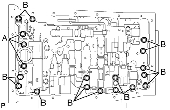
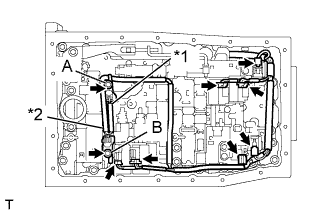

КОРПУС КЛАПАНОВ В СБОРЕ > УСТАНОВКА |
| 1. УСТАНОВИТЕ КОРПУС КЛАПАНОВ ТРАНСМИССИИ В СБОРЕ |
Установите пружину и корпус запорного шарика.
 |
Вставьте штифт клапана с ручным управлением в отверстие рычага клапана с ручным управлением.
| *1 | Штырь |
|  |
Установите корпус клапанов трансмиссии и закрепите его 19 болтами.
Установите пружину фиксатора и крышку пружины фиксатора, закрепив их болтом.
| 2. ПОДСОЕДИНИТЕ ЖГУТ ЭЛЕКТРОПРОВОДКИ ТРАНСМИССИИ |
|  |
Подсоедините 7 разъемов к электромагнитным клапанам.
| *1 | Оранжевый |
| *2 | Синий |
Подсоедините 2 датчика температуры ATF с помощью 2 зажимов и 2 болтов.
| 3. УСТАНОВИТЕ СЕТЧАТЫЙ МАСЛЯНЫЙ ФИЛЬТР КОРПУСА КЛАПАНОВ В СБОРЕ |
Покройте новое кольцевое уплотнение трансмиссионной жидкостью и установите его на сетчатый масляный фильтр.
Установите сетчатый масляный фильтр и закрепите его 4 болтами.
| 4. УСТАНОВИТЕ МАСЛЯНЫЙ ПОДДОН АВТОМАТИЧЕСКОЙ ТРАНСМИССИИ В СБОРЕ |
Установите новую прокладку и масляный поддон, зафиксировав их 20 болтами.
| 5. УСТАНОВИТЕ ЗАДНЮЮ ПОДУШКУ ОПОРЫ ДВИГАТЕЛЯ № 1 (для моделей с 1KD-FTV) |
Установите подушку задней опоры двигателя на трансмиссию и закрепите ее 4 болтами.
| 6. УСТАНОВИТЕ ПОПЕРЕЧИНУ РАМЫ № 3 В СБОРЕ (для моделей с 1KD-FTV) |
Установите поперечину рамы на подушку задней опоры двигателя и закрепите ее 4 болтами.
Установите поперечину рамы и закрепите ее 4 болтами и 4 гайками.
| 7. УСТАНОВИТЕ ЛЕВЫЙ И ПРАВЫЙ КРОНШТЕЙНЫ ЭЛЕМЕНТА ПЕРЕДНЕЙ ПОДВЕСКИ (для моделей с 1KD-FTV) |
Установите правый и левый кронштейны элемента передней подвески, закрепив их 8 болтами.
| 8. ДОБАВЬТЕ ЖИДКОСТЬ ДЛЯ АВТОМАТИЧЕСКОЙ ТРАНСМИССИИ |
Добавьте жидкость для автоматической трансмиссии (Нажмите здесь).
| 9. ВЫПОЛНИТЕ СБРОС ПАМЯТИ |